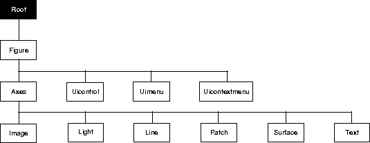

| MATLAB Function Reference | Search Help Desk |
| root object | See Also |
set and get to access the Root properties.
diary,echo,figure,format,gcf,get,set

The following table lists all Root properties and provides a brief description of each. The property name links take you to an expanded description of the properties. This table does not include properties that are defined for, but not used by the Root object.| Property Name |
Property Description |
Property Value |
| Information about MATLAB's state | ||
| CallbackObject |
Handle of object whose callback is executing |
Values: object handle |
CurrentFigure |
Handle of current Figure |
Values: object handle |
ErrorMessage |
Text of last error message |
Value: character string |
PointerLocation |
Current location of pointer |
Values: x-, and y-coordinates |
PointerWindow |
Hanlde of window containing the pointer |
Values: Figure hanlde |
| ShowHiddenHandles |
Show or hide handles marked as hidden |
Values: on, offDefault: off |
| Controlling MATLAB's behavior | ||
Diary |
Enable the diary file |
Values: on, offDefault: off |
DiaryFile |
Name of the diary file |
Values: filename (string) Default: diary |
Echo |
Display each line of script M-file as executed |
Values: on, offDefault: off |
Format |
Format used to display numbers |
Values: short, shortE, long, longE, bank, hex, +, ratDefault: shortE |
FormatSpacing |
Display or omit extra line feed |
Values: compact, looseDefault: loose |
Language |
System environment setting |
Values: string Default: english |
| RecursionLimit |
Maximum number of nested M-file calls |
Values: integer Defalut: 2.1478e+009 |
| Units |
Units for PointerLocation and ScreenSize properties |
Values: pixels, normalized, inches, centimeters, pointsDefault: pixels |
| Information about the display | ||
ScreenDepth |
Depth of the display bitmap |
Values: bits per pixel |
ScreenSize |
Size of the screen |
Values: [left, bottom, width, height] |
| Information about terminals (X-Windows only) | ||
TerminalHideGraphCommands |
Command to hide graphics window |
Values: string |
TerminalOneWindow |
Indicates if there is only one graphics window |
Values: on, offDefault: on |
| TerminalDimensions |
Size of the terminal |
Values: scalar in pixels |
| TerminalProtocol |
Identifies the type of terminal |
Values: none, x, tek401x, tek410x |
| TerminalShowGraphCommand |
Command to display graphics window |
Value: string |
| General Information About Root Objects | ||
Children |
Handles of all nonhidden Figue objects |
Values: vector of handles |
Parent |
The Root object has no parent |
Value: [] (empty matrix) |
Selected |
Indicate whether the Text is in a "selected" state. |
Values: on, off Default: on |
Tag |
User-specified label |
Value: any string Default: '' (empty string) |
Type |
The type of graphics object (read only) |
Value: the string 'root' |
|
User-specified data |
Values: any matrix Default: [] (empty matrix) |
| MATLAB profiler | ||
Profile |
Enable/disable profiler |
Values: on, offDefault: off |
ProfileFile |
Specify the name of M-file to profile |
Values: pathname to M-file |
ProfileCount |
Output of profiler |
Values: n-by-1 vector |
ProfileInterval |
Time increment at with to profile M-file |
Values: scalar (seconds) Default: 0.01 seconds |